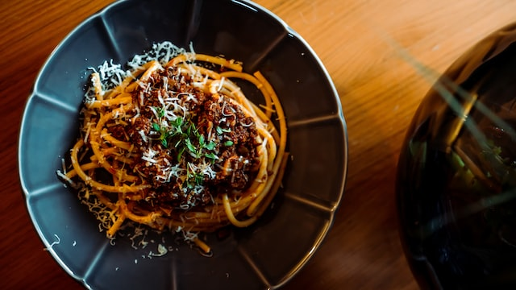

Spaghetti Bolognese

Recipe Description
Easy recipe for delicious spaghetti with minced meat that is perfectly
accompanied by grated cephalograviera and is ready in less than an hour. A
time-honored favorite dish loved by young and old alike! This recipe is
for making those classic spaghetti with minced meat that mom used to cook
and the smells filled the whole house.
Our classic favorite pasta with minced meat, also known as Bolognese, is
one of the most famous dishes of Italian cuisine. The birthplace of this
dish is considered to be Imola, a city located west of Bologna. Napoleon's
invasion of Italy and the Italians' introduction to ragoût, brought by his
soldiers (meat stew), formed the basis for the minced meat sauce as we
know it today.
Ingredients
- 6 soup spoons of olive oil
- 750gr of ground beef
- 2 finely chopped onions
- 1 clove of garlic chopped
- 1 teaspoon of granulated sugar
- 1 soup spoon dry thyme
- 2 spoons of tomato paste soup
- 100ml red wine
- 200ml water
- 1 cinnamon stick
- 2 bay leaves
- 3 peppercors
- 400gr of konkache
- 500gr of spaghetti
- 100ml cream milk 35%
- grated parmesan for serving
Steps
-
Put a deep non-stick pan on a high heat to burn very well and pour 1
soup spoons olive oil.
-
We throw in the minced meat, letting it fry a little before we start to
"break" it into small pieces with a wooden spoon.
-
Remove the minced meat from the pan with a slotted spoon, put it in a
bowl
-
In the same pan and without cleaning it, add the remaining olive oil,
onions, garlic, sugar, dry thyme and let the onion caramelize for at
least 4-5 minutes.
- Then, add the minced meat, the tomato paste soup and mix.
-
Extinguish with the wine and let the alcohol evaporate completely.
-
Once the wine has evaporated, pour in the water,the cinnamon stick, the
bay leaves, the spices and the concache tomato.
- Lower the heat, stir and let simmer for at least 10 minutes.
- While the minced meat is boiling, we prepare our pasta.
- In a pot of boiling salted water, add the spaghetti.
-
Boil them according to the instructions on the package, minus one
minute. We want our spaghetti to be al dente.
-
As soon as our pasta is ready, we take it off the heat, strain it and
set it aside.
-
After our sauce has set, add the cream, mix and turn off the heat.
-
Serve the spaghetti with the minced meat sauce on top, sprinkle with
fresh parmesan, basil and plenty of fresh pepper.